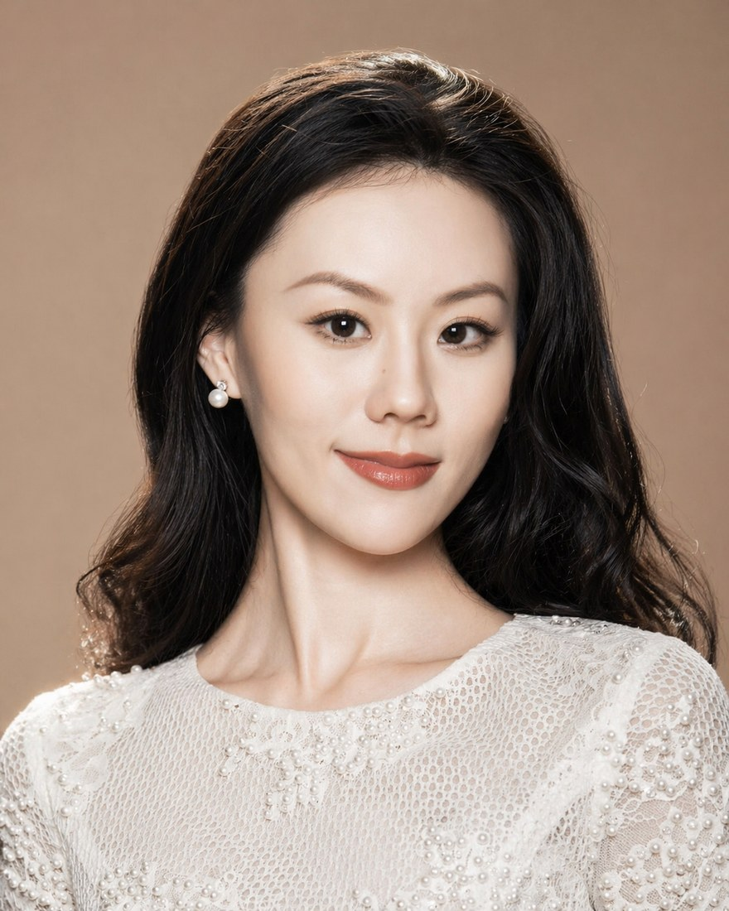
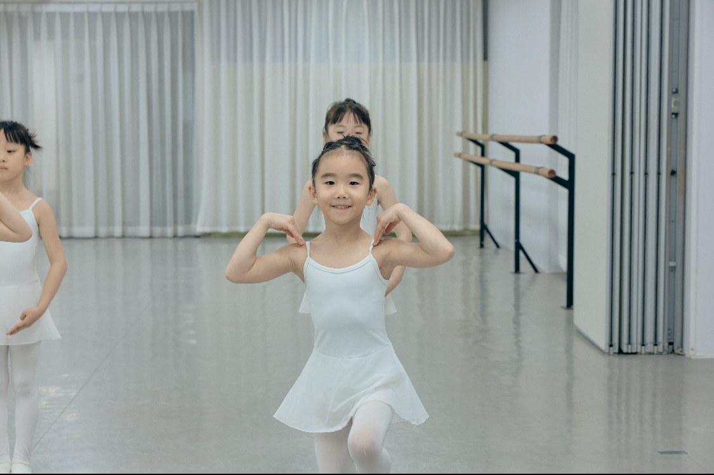
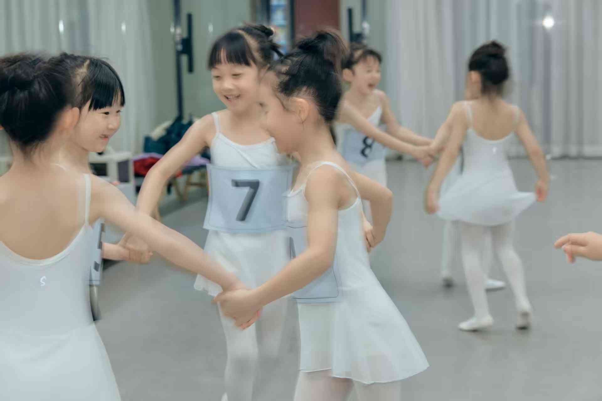
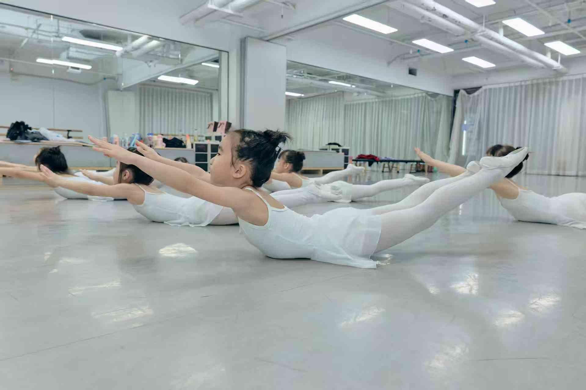

会思考
理解动作逻辑、身体路径与舞蹈语言，而不是只复制老师的动作。
Technique · Artistry · Dance Literacy
More than Ballet
About
JIAJING BALLET 诞生于对舞蹈教育的热爱，也来自对传统芭蕾教学方式的重新思考。我们相信，舞蹈不只是技术的展现，更是一种创造力的表达、思维的启发，也是个体与世界对话的方式。
我们希望打破“舞蹈 = 技巧训练”的单一认知。芭蕾可以严谨，也可以自由；可以训练身体，也可以打开想象。我们相信芭蕾不止是技巧训练，也关乎创造力、表达、身体理解和长期成长。
What We Cultivate
理解动作逻辑、身体路径与舞蹈语言，而不是只复制老师的动作。
在音乐、呼吸、目光与质感中建立属于自己的舞台表达。
能用动作、目光、呼吸与舞台感，把情绪、观点和故事传递出来。
通过即兴、作品欣赏与创编练习，把身体变成自由、有想象力的表达工具。
Programs
首页只呈现课程方向。更详细的等级、适合年龄、训练目标与考级路径，可以点击进入独立页面。
Faculty
JIAJING BALLET 以清晰、安全、细致的训练方法，陪伴学生在技术、音乐性、表达与身体理解中长期成长。

Founder · Dance Educator
Jiayue Guo is the founder of JIAJING BALLET, a dance educator whose work brings together classical ballet training, dancer wellness, dance literacy and creative expression. Her teaching is grounded in clear structure, safe practice and long-term artistic growth, supporting each student to build technical confidence, musical sensitivity and an expressive body of their own.
Student Growth
记录课堂里的专注、合作、表达与一点点看得见的成长。后续也可以继续加入阶段反馈、考级记录与成长前后对比。






Current Enrollment
适合希望建立系统芭蕾基础、未来衔接考级或剧目训练的儿童与青少年。
适合希望接触现当代舞、提升创造力、表现力和身体多样性的学生。
建议先预约体验或评估课，根据年龄、基础和身体条件安排合适路径。
FAQ
我们认为，孩子可以很早接触舞蹈，但不应该过早进入成人化、技巧化的训练。对于小年龄段的孩子，芭蕾启蒙的重点不是“站得多开、腿抬得多高、动作做得多像”，而是帮助孩子在安全、适龄的课堂里，逐渐建立身体意识、节奏感、协调性、空间感、专注力与表达欲。
这也和 ABT National Training Curriculum 的价值观一致：训练应当符合孩子的身心发展阶段，先保护身体，再建立技术。我们希望孩子从一开始就知道，芭蕾不是被不断纠正到“标准”，而是在清晰的规则里理解身体、听见音乐、感受自己，也学会用动作表达。
因此，小年龄段的课程会更重视音乐游戏、方向与空间、基础动作词汇、课堂习惯、想象力和合作能力。我们想培养的不是只会模仿动作的孩子，而是会思考、会感受、会表达、会创造的孩子。
JIAJING BALLET 是工作室名称。More than Ballet 是公众号名称，也是一句核心理念：我们相信芭蕾不止是技巧训练，也关乎创造力、表达、身体理解和长期成长。
不是。考级可以是阶段目标，但课程的核心仍然是建立清晰、安全、可持续的训练方法，以及更完整的舞蹈素养。
可以。我们会根据年龄、基础、身体状态和学习目标，建议适合的课程路径。
Contact
留下学生年龄、基础和想咨询的课程，我们会回复适合的班级与上课时间。